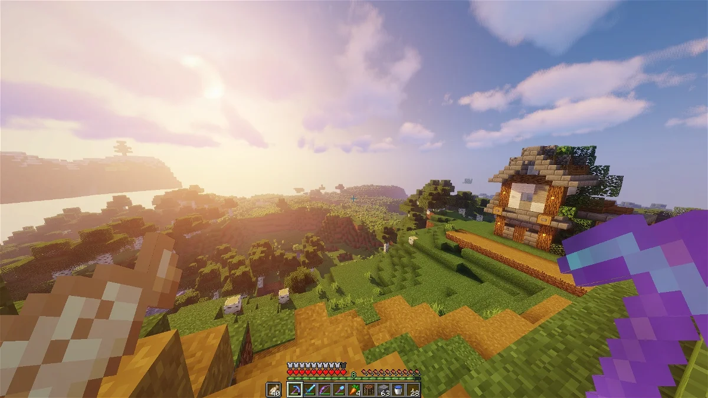
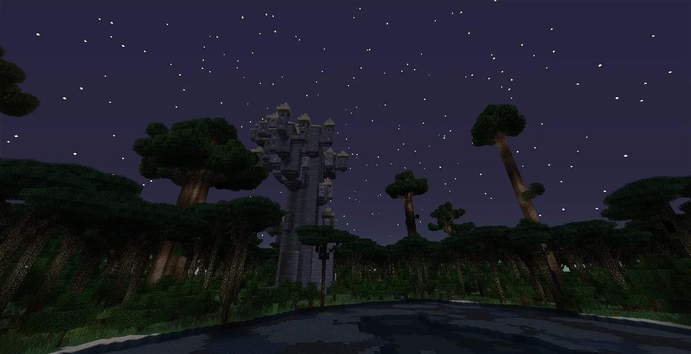
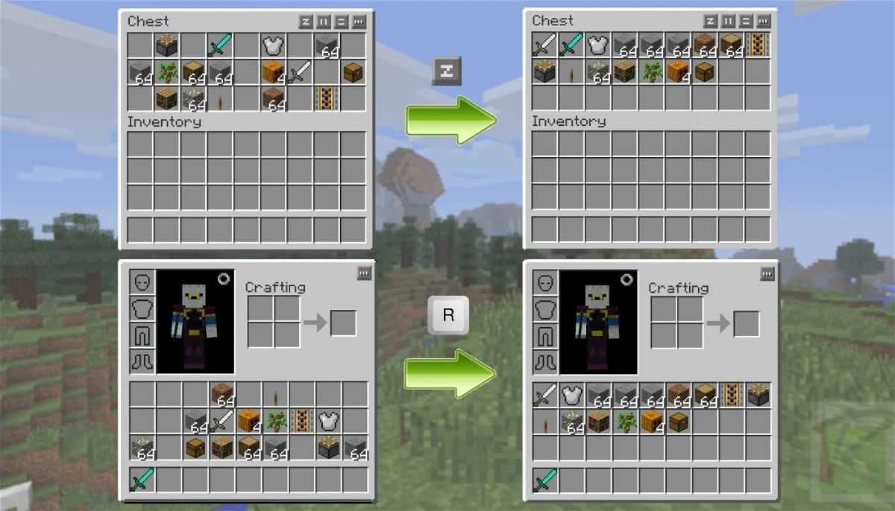
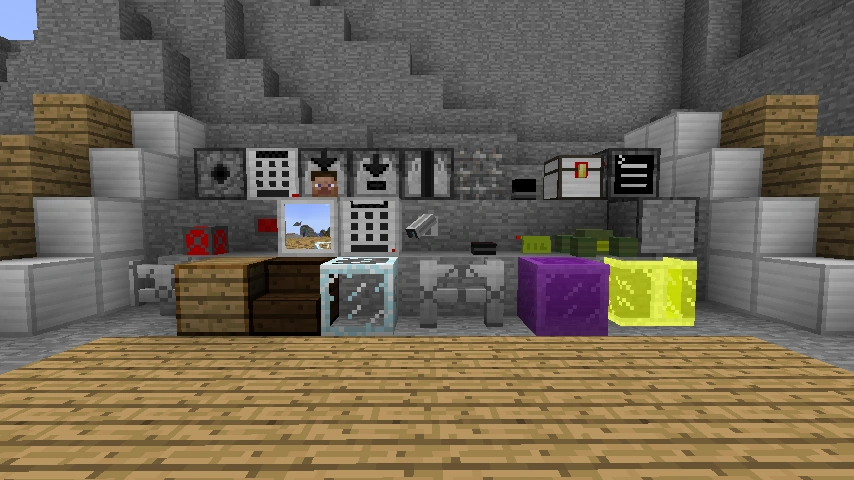

Mods para Forge
Por si no conoces el concepto, los mods son modificaciones creadas por fans para introducir nuevos elementos en el juego. Minecraft es uno de los juegos que más opciones permite en este sentido, ya que gracias a su libertad permite implementar mejoras gráficas, cambios para generar nuevos escenarios, equipamiento, apariencias, decoraciones, edificios e incluso existen mods para automatizar tareas y muchas cosas de las que puedas imaginar.
A continuación repasaremos los mejores mods de Minecraft que puedes instalar en tu PC, de modo que puedas disfrutar de todas sus ventajas y experimentar sensaciones de juego totalmente diferentes a las que has vivido hasta ahora.
En esta lista, podrás explorar los mods más destacados actualmente disponibles para Minecraft. Es importante señalar que estos mods son exclusivos para la plataforma de PC, a pesar de que el juego también está presente en otras plataformas como PS5, PS4, Xbox Series X|S, Xbox One o Nintendo Switch. Junto a la explicación de cada mod, encontrarás un enlace de descarga que te permitirá verificar su disponibilidad y compatibilidad con otros mods. Es relevante destacar que estos mods para Minecraft son de acceso gratuito y su descarga e instalación son bastante sencillos, como se detalla en las descripciones individuales de cada uno.
OptiFine
OptiFine es un mod que sobresale como la principal herramienta para optimizar Minecraft. No solo facilita mejoras significativas en los fotogramas por segundo (fps), sino que también realza la calidad gráfica al ofrecer soporte completo para texturas en alta resolución. En términos de opciones personalizables, es sumamente completo, permitiendo ajustar una amplia gama de aspectos para adaptarlo completamente a tus necesidades.
Twilight Forest
Twilight Forest te permite viajar a un reino crepuscular que está lleno de árboles y con muchas cosas por descubrir. Pero tienes que tener mucho cuidado, algunos habitantes del bosque son hostiles y te pueden poner las cosas realmente difíciles en tu incursión. Además, este mod te permite tener acceso a nuevos mobs, construcciones e introducirte en un área totalmente inédita y que rompe la dinámica habitual del juego.
Artifacts

Artifacts es un mod que, como su propio nombre indica, está dedicado a artefactos. Lo más interesante de esto es que, más allá de ser artefactos muy poderosos y totalmente nuevos, se pueden encontrar en las mazmorras, por lo que tendrás que sudar para poder conseguirlos. No todo podía ser fácil.
Inventory Tweaks
Inventory Tweaks te permite facilitar la administración de objetos para que no tengas que hacer malabares con el inventario y puedas distribuir todas tus pertenencias de un modo mucho más sencillo y ordenado.
SecurityCraft
SecurityCraft añade exactamente lo que el nombre sugiere: láser, escáneres de retina, teclados, puertas irrompibles y más. Se adapta bien a mods como Smart Moving, Secret Rooms y el mod de Wall Jump. Ahora tiene la opción de configurar contraseñas y códigos clave para acceder a través de puertas que son inquebrantables, excepto por el propietario.